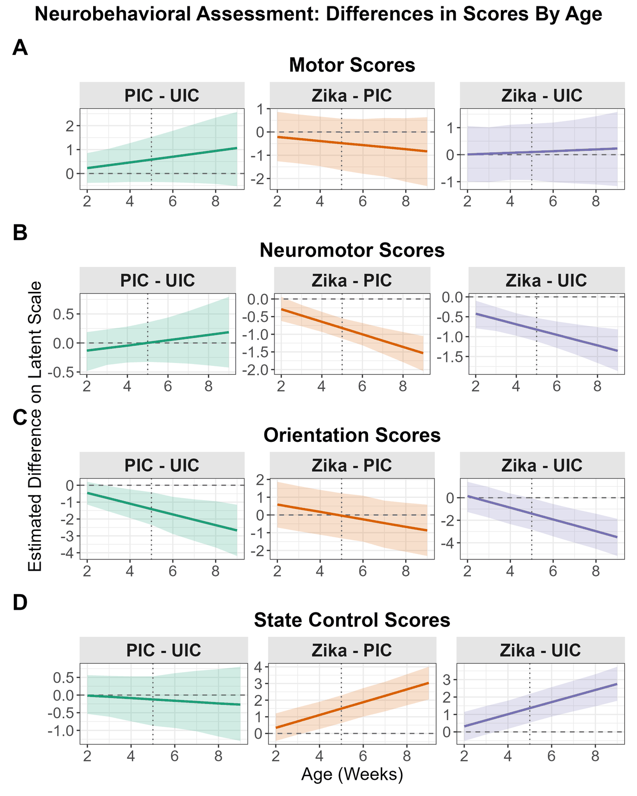
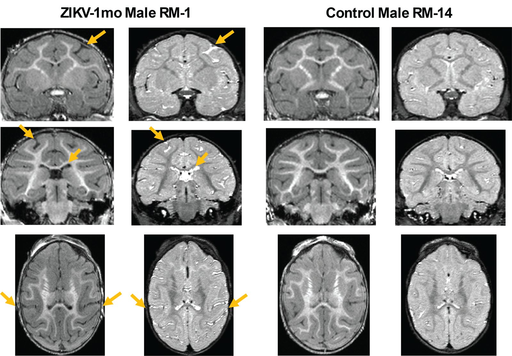
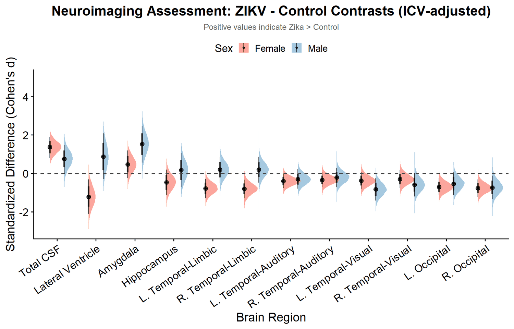

An infection after birth
Most people know Zika virus for the damage it inflicts before birth. During the 2015 and 2016 epidemic, infection during pregnancy caused microcephaly and other severe birth defects. What Zika does when it infects a baby after birth remains far less clear, even though children account for 10 to 31 percent of Zika infections and the human brain grows rapidly throughout the first two years of life.
Answering that question directly in children is nearly impossible because doctors cannot observe who gets infected or exactly when, and mild cases often pass unnoticed. To track postnatal infection from day one, our lab studied 24 infant rhesus macaques—12 infected with Zika virus at about five weeks old and 12 controls. In the infected infants, virus levels peaked in the blood within three days and cleared within three weeks. Our team then tracked all 24 animals across seven developmental domains over the next eight months.
- Weeks 2–9Weekly exams of reflexes, attention, and temperament
- Week 5Zika infection, or a control treatment
- Month 3Brain MRI
- Months 4 and 6Visual acuity by eye tracking
- Month 5Response to a brief stressor
- Months 7–8Attachment to the caregiver
Twenty-four animals
One number shaped every statistical decision I made on this project: 24. Split the cohort by infection status and you compare 12 Zika-infected infants against 12 controls. Split again by sex and each subgroup drops to 6; divide the controls by treatment type as well and you are down to 3 animals per cell. In a longitudinal primate study, no extra cohorts wait in the wings, so every single observation counts.
A study this small cannot afford to waste information, and it cannot afford to fool itself.
Those two competing pressures—getting full value out of 24 animals while guarding against false alarms—guided three core modeling choices.
Report uncertainty instead of binary verdicts. I wrote every model in R using brms, which compiles Bayesian hierarchical models into Stan. Instead of sorting findings into "significant" or "not significant" with p-values, I reported each result as a full posterior distribution: a central estimate, an 89% credible interval, and the posterior probability that the difference points in the stated direction. Following Richard McElreath's Statistical Rethinking, I chose 89% over the conventional 95% as a deliberate reminder that any numerical cutoff is arbitrary.
Borrow baseline knowledge where earlier data exist. Our lab had already measured healthy infant rhesus macaques in previous studies, and discarding that history in a 24-animal study would throw away hard-won information. For the control group, I anchored each model's starting expectations (its priors) in those earlier cohorts, weighted by their sample sizes, while allowing the new measurements to pull the estimates wherever the evidence led. Because no comparable postnatal data existed for Zika-infected infants, I assigned weakly informative priors to the infection effects so the new data drove those estimates on their own.
Match each model to the shape of its measurement. Forcing every outcome into a standard bell-curve regression distorts small datasets, so I selected a model family tailored to how each measurement behaves:
- Ordered exam scales (ordinal model): Weekly neurobehavioral exams use discrete rating scales where the step from 1 to 2 may not equal the step from 4 to 5, so I modeled those ratings with an ordinal regression.
- Behavioral tallies (negative binomial model): Stress and attachment behaviors are whole-number counts that vary widely from animal to animal, so I used a negative binomial model that accommodates heavy spread.
- Proportions bounded at 0–100% (beta regression): Eye-tracking visual acuity measures the share of time an infant looks at a target—a number pinned strictly between zero and one—so I applied a beta regression and estimated missing trials directly inside the Bayesian model.
- Brain volumes (size-adjusted linear model): Raw MRI region volumes scale with an infant's overall head size, so I fitted linear models adjusted for total brain volume, ensuring a region appears smaller only when it shrinks relative to the rest of the brain.
Two kinds of control
A viral infection hits a developing brain through two channels at once: direct action by the virus and the body's own immune response. Because inflammation alone can perturb early brain development, comparing Zika-infected infants only against untreated controls leaves those two forces tangled together. To pull them apart, the study divided the 12 controls in half: 6 infants received no treatment, while 6 received a synthetic molecule that triggers an antiviral immune reaction without introducing any virus.
Weekly neurobehavioral exams from weeks 2 to 9 quickly showed why that three-way design mattered. Two domains declined in Zika-infected infants after week 5, and the two control groups separated those shifts cleanly.

Attention to sights and sounds (third row) fell in Zika-infected infants compared with untreated controls, yet it fell by roughly the same amount in immune-stimulated controls. Because mimicking an immune response produced the same dip with no virus present, that change points to immune activation instead of Zika virus itself.
Emotional regulation (bottom row)—how irritable an infant gets and how hard it is to console—worsened specifically after Zika infection. Zika-infected infants lost ground week after week compared with both control groups, whereas immune-stimulated controls tracked untreated controls closely. That divergence links disrupted emotional regulation directly to the virus.
What the animals showed
Across eight months of testing, Zika-infected infants developed basic sensory abilities and caregiver bonds much like controls, yet their emotional responses diverged at every stage we measured—and three-month brain scans showed structural differences in regions tied to emotion.
The earliest behavioral shift appeared right after infection. Starting at the first exam after week 5 and widening through week 9, Zika-infected infants showed poorer emotional regulation than controls, growing more irritable and harder to soothe.
At three months of age, brain MRI scans revealed anatomical differences in Zika-infected infants compared with controls, beginning with the clear liquid that cushions brain tissue. Zika-infected infants—most clearly females—carried more cerebrospinal fluid than controls. That excess fluid pooled in wider spaces around the outer folds of the brain rather than swelling the fluid-filled chambers deep inside it (the ventricles), a different pattern from classic internal fluid buildup.
Adjusting each brain region for overall brain size uncovered two additional differences in emotion-related anatomy, each concentrated in one sex. Zika-infected males had a larger amygdala than control males—the deep, almond-shaped hub that detects threats and drives emotional vigilance. Zika-infected females, by contrast, had a smaller temporal-limbic cortex than control females—outer regions along the sides of the brain that help interpret social cues and regulate emotional responses.


Behavioral tests over the next five months echoed that emotional pattern, though scanning brains at three months and testing behavior later means we cannot tie any single anatomical change directly to a specific behavior. At five months, Zika-infected infants showed more hostile behavior than controls during a brief stress test—and unusually, that hostility emerged during the mildest, least threatening stages of the test, where controls stayed calm.
By seven to eight months, Zika-infected infants still formed attachments to their caregivers just as strongly as controls, yet their protest during separation was blunted. When kept briefly apart from their caregiver, Zika-infected infants showed less separation distress, and Zika-infected males screamed less often than control males. That quiet shift led me to examine the acoustics of their calls in a companion study (What a scream carries).
One closely watched outcome showed no effect of infection at all. Because attention to sights and sounds dropped in the weeks after infection, our team worried that Zika virus might have caused lasting visual impairment. We tested visual acuity via eye tracking at four and six months across three levels of contrast difficulty, and Zika-infected infants matched controls at every level and both ages. I gave that null finding the same modeling care as our positive results, because a reliable "no" matters as much to parents and pediatricians as a "yes."

Where the checks changed the story
The first complete analysis of this dataset did not survive intact. Small longitudinal cohorts invite subtle traps where a convenient modeling assumption—a straight trend line, a pooled baseline, a single outlier—can manufacture an illusion out of noise. Between my own skepticism and sharp questions from peer reviewers, I ran four major stress tests that reshaped what the revised paper now claims.
An effect that arrived before its cause. My initial longitudinal model assumed that the gap between Zika-infected infants and controls changed along a straight line from week 2 to week 9. When I checked that fitted line for emotional regulation, the 89% credible interval excluded zero at week 4—one full week before any infant was infected. Because a virus cannot alter behavior before it enters the body, that impossible timing signaled a modeling artifact: a rigid straight line was dragging the steep post-infection divergence backward in time.
To remove that linearity assumption, I refit the model so each week's group difference was estimated separately. Once freed from a straight line, the Zika-specific decline in emotional regulation appeared strictly after week 5; the illusory week-4 signal turned out to be a brief dip in the untreated controls instead of anything unusual in the Zika-infected infants. Running the same week-by-week check on infant reflexes exposed the opposite situation: a small reflex difference genuinely existed before week 5, so the revised paper reports it as preexisting variation between animals instead of a consequence of Zika infection.
Testing whether pooled controls hid a shortcut. To preserve statistical power with 24 animals, most of our primary analyses pooled the untreated controls and immune-stimulated controls into one 12-animal reference group. Reviewers asked whether lumping those two subgroups together masked real differences. I refit every outcome with all three groups modeled apart, comparing Zika-infected infants against untreated controls and against immune-stimulated controls independently.
Every core finding held against both control groups on their own, giving those results firmer support. Two cortical results—apparent volume reductions in visual and auditory cortex—failed to hold against both control groups separately, so the revised paper flags them with explicit caution.
Checking whether "credible in males" meant "different between sexes." Several brain-region estimates excluded zero in one sex while overlapping zero in the other, a pattern that often tempts researchers to declare a sex difference. Statistically, however, the gap between a credible estimate and an uncertain one is not itself a credible difference; claiming that males and females responded differently requires testing the contrast between sexes directly. When I estimated that direct male-versus-female difference for every brain region, the evidence proved strong for some regions and much weaker for others, and the revised paper labels all sex-specific patterns as preliminary because six animals per subgroup cannot carry firmer claims.
Asking whether more virus meant more harm. If Zika virus directly drove these changes, infants carrying higher viral loads in their blood might reasonably show larger shifts. I tested that dose-response relationship within the 12 Zika-infected infants, and a few associations initially cleared our credibility threshold.
Leave-one-out checks quickly punctured those trends: every single association depended on whether one infant with an unusually low viral load remained in the dataset. Drop that animal and the apparent slopes vanished. The revised paper therefore reports the viral-load analysis as exploratory with a null result—and notes plainly that a null across 12 animals settles very little either way.
The shape of a model can create a result. The only defense is to change the shape and see whether the result stays.
What I would still not claim
Even after those sensitivity checks, four clear limits bound what this study can support:
- No direct brain-to-behavior links. Because we scanned brains at three months and measured behavior at other ages, the data cannot tie a specific anatomical shift to a specific behavioral outcome.
- No direct measurements of fluid flow. Structural MRI captures the wider cerebrospinal fluid spaces around the cortex, yet any explanation for why that fluid accumulated remains an inference from images instead of a measurement of fluid circulation or clearance.
- Nursery rearing. All 24 infants grew up in a nursery instead of with their mothers, an early environment that shapes emotional development and limits how directly these results generalize.
- An early follow-up window. Eight months covers only early infancy; determining whether these anatomical and emotional differences fade, persist, or grow requires longer follow-up.
Open by default
Every analysis script and dataset behind these models is public. The repository holds nine R scripts arranged in the order the analyses appear in the paper, complete with prior specifications, model code, and all sensitivity checks. Anyone can rerun the pipeline from scratch—or disagree with a modeling choice I made and see immediately what changes.
Code and data on GitHubPreprint on bioRxiv
Status. Posted as a preprint in March 2026 and in revision at Communications Biology. This page follows the revised analysis, so a few details differ from the preprint.
With Jessica Raper (senior author), Ann Chahroudi, and 18 other colleagues; the full author list is on the preprint. Funded by the National Institute of Neurological Disorders and Stroke (R01 NS120182), the NIH Office of the Director (P51 OD011132), and the other awards listed in the paper.